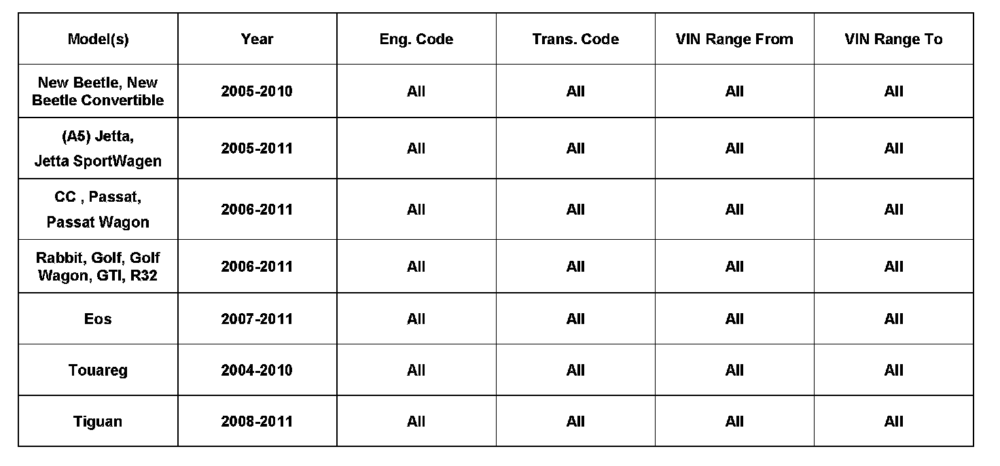
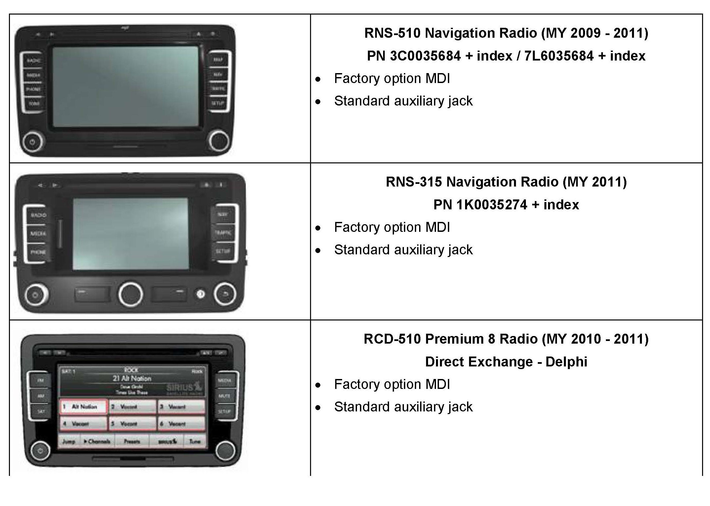
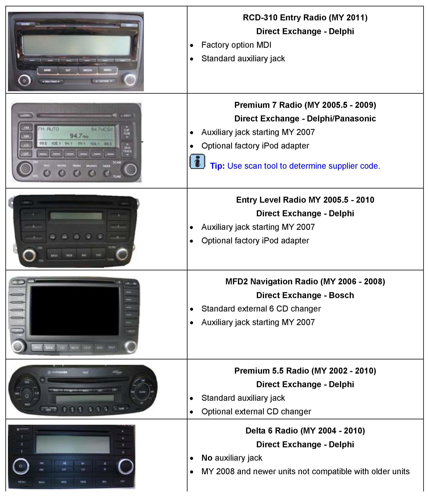
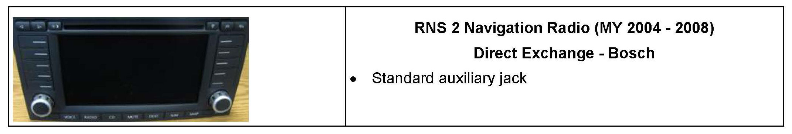
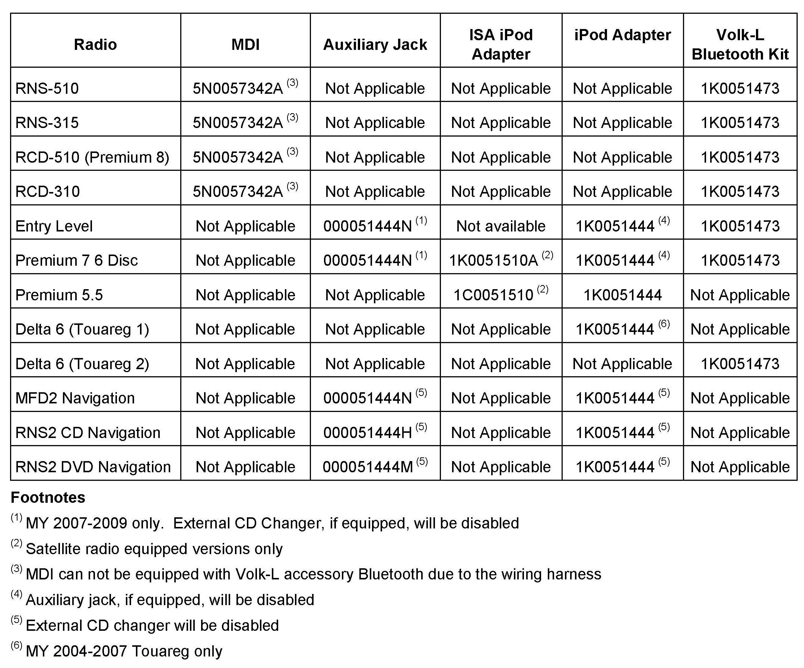
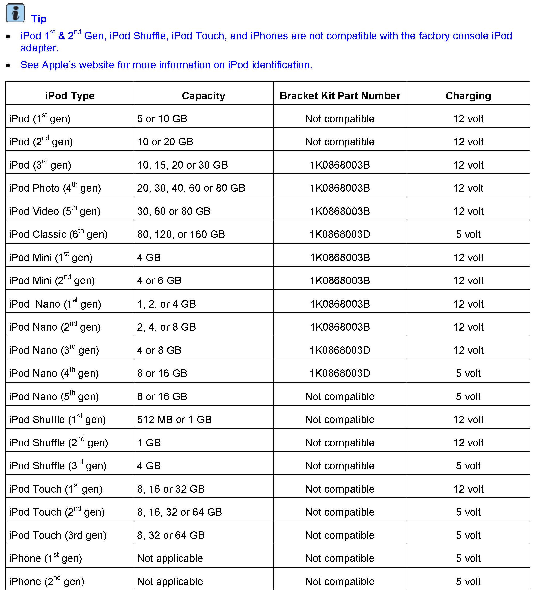
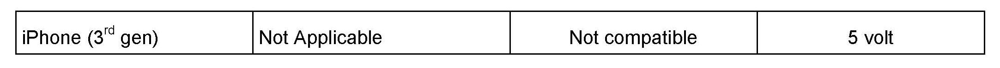
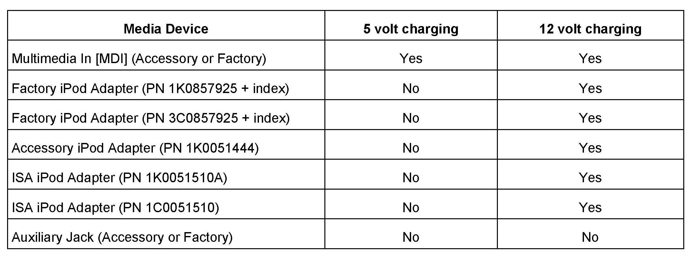
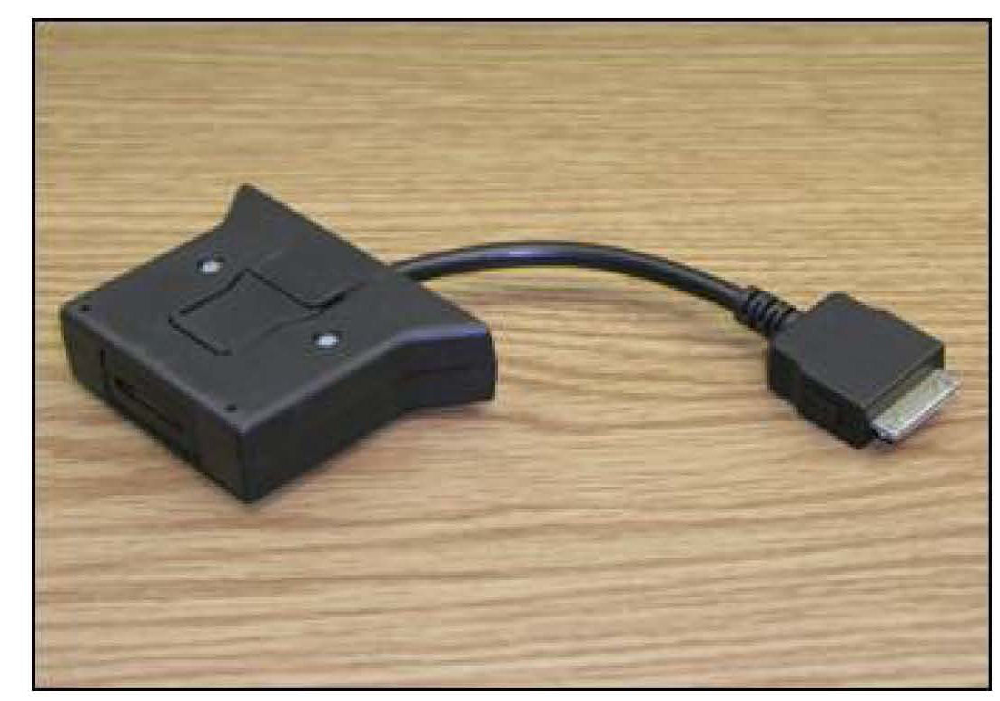
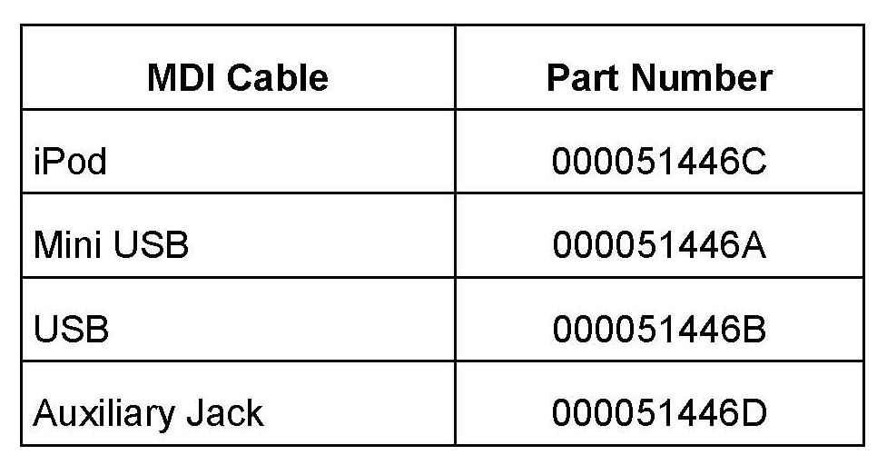

Audio System - Radio And External Device Overview
91 10 25October 4, 2010
2022044 supersedes T.B. V911015 (Jul. 16, 2010) and V910930 (Nov. 18, 2009) to update available accessories.

Vehicle Information
Condition
Radio & External Media Device Overview Radio identification including:
^ Factory media device installation
^ Identifying a direct exchange radio
^ Accessory options
^ iPod(R) identification including:
^ Charging capabilities
^ Accessory 12 volt to 5 volt adapter
Factory console bracket availability:
^ Media device charging capabilities
^ Available MDI cables
Technical Background
To provide a comprehensive overview of media devices both factory and accessory installed.
Production Solution
Not applicable.
Service
Radio Identification and Factory Media Device Installation



Tip:
Button names may vary from pictures shown.

Accessory Options
iPod Identification


Use the table to determine the charging and factory bracket availability.
Media Device Charging Capabilities

Media Device Charging Capabilities

Accessory 12 Volt to 5 Volt Adapter

MDI Cables
Tip:
The USB MDI cable can not be used in conjunction with the USB cable provided with the device. The device will not operate properly.
Warranty
Information only.
Required Parts and Tools
No Special Parts or Special Tools required.
Additional Information
All part and service references provided in this Technical Bulletin are subject to change and/or removal. Always check with your Parts Dept. and Repair Manuals for the latest information.